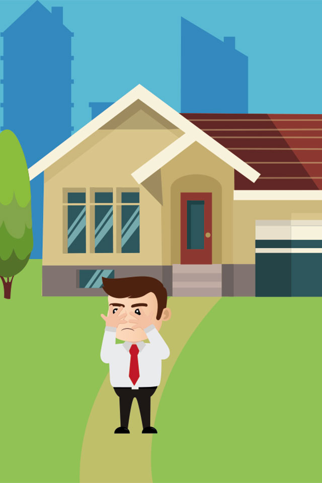
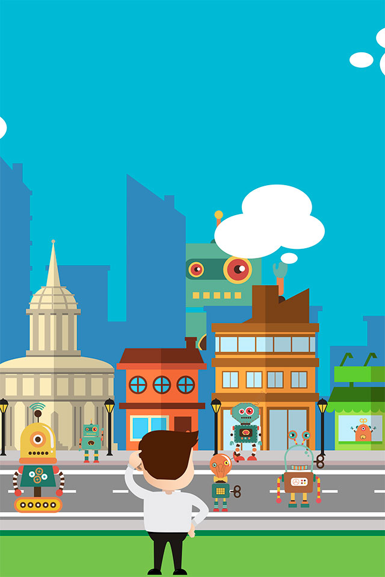

Global Giants
Het is een vroege zondagochtend in 2021. Tim zit op zijn pc, te surfen op het internet. Als hij
opeens een bericht binnen krijgt “Alarm”.

Tim rent naar buiten om te kijken wat er aan de hand is.

Hij kijkt om zich heen en ziet dat er overal robots zijn. Wat kan dit betekenen? Zijn telefoon gaat
af, hij heeft een bericht.
Doordat robots veel werk hebben overgenomen is Tim nu werkloos. Hij gaat op de computer
zoeken naar een nieuwe baan die wel blijft bestaan.


×

×
Hij komt op een site waar 3 beroepen staan die wel blijven bestaan. Klik op 1 van de
icoontjes om meer over dat beroep te weten te komen.
↑